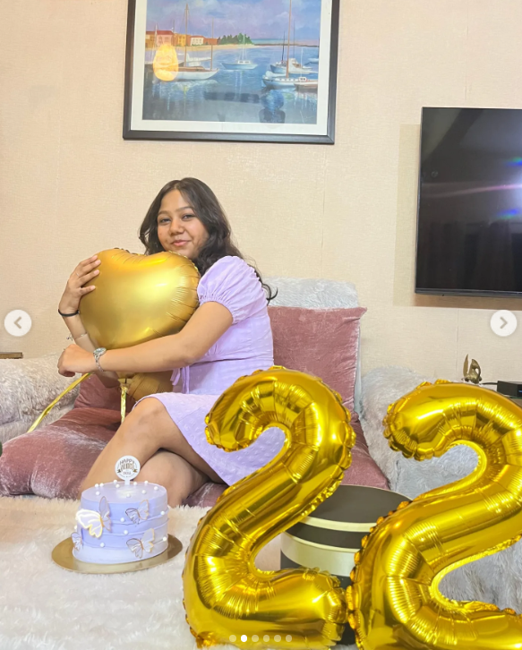

Start with the feeling, not the shopping list
Decide what the birthday person wants the day to feel like: quiet and personal, lively with dancing, a dinner with close people, or an open-house style gathering. Pick one or two priorities. These become the filter for every later decision.
Choose a date, time, and guest range
Check the birthday person’s availability and the schedules of the people they most want to invite. Make a first-pass guest list before you choose the room. The headcount affects seating, food, activity space, and the effort of hosting.
Select the setting and budget together
Compare home and venue options by total effort, not just rental cost. At home, consider setup, furniture, serving supplies, and cleanup. For a venue, ask about capacity, access time, included furniture, decor rules, outside vendors, and cancellation terms. Set a spending ceiling and a small contingency before buying extras.
Connect the outfit, cake, and decor
Choose one color or personal detail to link the outfit, cake, and decorations. A single focal point can make the setup feel intentional without filling every surface. Adapt it to the room and reuse pieces you already have.
Plan food, flow, and help
Decide whether the event covers a meal or just snacks and cake. Place arrival, seating, food, cake, and photos so guests can move through the room easily. Give helpers specific jobs, such as greeting people, managing music, or taking a few photos.
One-page planning sequence
- Priorities and celebration style
- Date, time, and guest range
- Home or venue; confirm rules and capacity
- Budget ceiling and contingency
- Food, cake, outfit, and visual direction
- Room layout, schedule, and task owners
- RSVP check and final setup list
Frequently asked questions
What should I plan first?
Start with what the birthday person wants, then confirm the date, guest range, and setting. These decisions shape the budget and the rest of the plan.
How early should I start?
Book-dependent items such as a venue or custom cake need more lead time. A small home gathering can use the same sequence on a shorter timeline.
Further reading
These resources support the practical ideas in this guide. Open them for details that fit your venue and plans.
- Party-planning timeline and checklist — Mapped as a supporting planning reference.
- How to plan a party — Mapped as a supporting planning reference.
- Birthday party planning timeline — Mapped as a supporting planning reference.
- Birthday party planning guide — Mapped as a supporting planning reference.
- Printable party-planning checklist — Mapped as a supporting planning reference.
- Party-planning checklist for larger events — Mapped as a supporting planning reference.
- Event-planning checklist — Mapped as a supporting planning reference.
- Large party-planning checklist — Mapped as a supporting planning reference.
See the birthday inspiration
Use Shanaya’s birthday post as a visual reference, then make the celebration your own.

Open the birthday post on Instagram ↗View the birthday post ↗ Visit @_itzzzshanaya